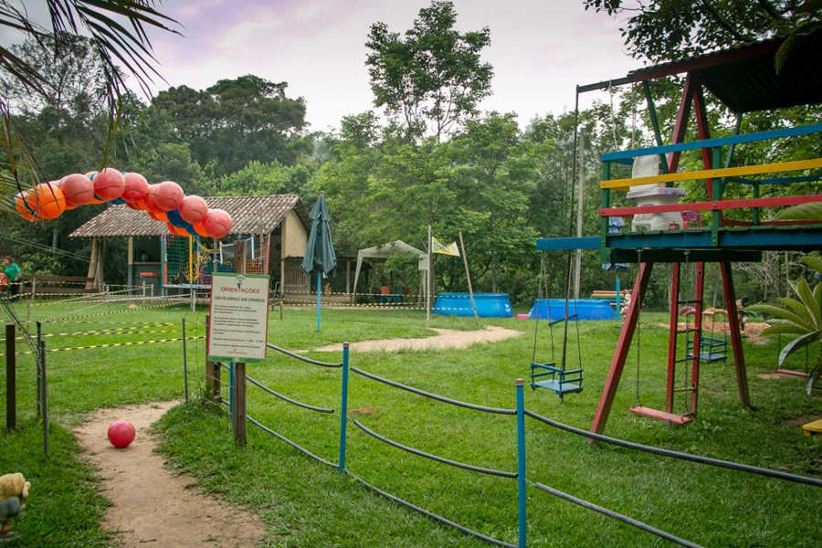
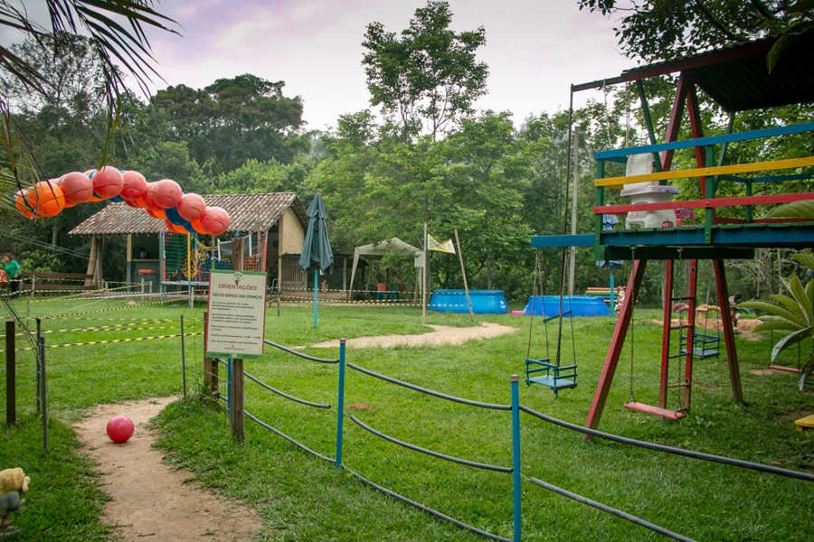

A Rota Terra Nova, em Jundiaí, São Paulo, é um ponto turístico
encantador, cheio de história e cultura. É famosa por estar ligada ao Ciclo do Café, uma época
em
que o café era muito importante para a economia do Brasil.
Ao percorrer essa rota, você encontrará fazendas de café antigas e casarões que eram moradia das
famílias ricas daquela época. Esses prédios históricos são preservados e mostram como era a vida
nos
tempos em que o café era o "rei".
Além das belas paisagens e construções antigas, a Rota Terra Nova é importante para a cultura
caipira. Você poderá conhecer as danças, músicas e comidas típicas da região, uma verdadeira
experiência cultural.
Uma curiosidade interessante é que ainda é possível percorrer as antigas trilhas e estradas
usadas
para transportar o café até os portos de Santos e Rio de Janeiro. Imagine-se caminhando por
esses
caminhos históricos, conectando-se diretamente com o passado.
Ao explorar a Rota Terra Nova, você fará uma viagem no tempo, onde a história se mistura com a
beleza natural da região. Essa experiência enriquecedora certamente deixará lembranças
duradouras e
despertará o interesse pela preservação do nosso patrimônio cultural e histórico.
-
Endereço: Estrada Francisco Missé, 6000 – Jundiaí
-
Telefone: (11) 97200-2549.
-
Horário de funcionamento: Sáb. e dom. das 11h30 às 15h30.
-
Site: https:https://www.facebook.com/japiape/
Há 15 anos, o Japiapé visa proporcionar momentos agradáveis em contato com a natureza. Além de
oferecer um excelente restaurante com comida típica caipira nos finais de semana, o local possui um
ambiente rural e acolhedor. Os visitantes têm acesso a atividades de lazer, aventura e educação
ambiental, incluindo trilhas ecológicas de aventura, tirolesa e um espaço dedicado às crianças.
Descubra uma variedade deliciosa de doces, bolos confeitados, rosquinhas artesanais, pães frescos e
chocolates caseiros, entre outras opções irresistíveis para satisfazer seu paladar.
-
Endereço: Av. Engenheiro Tasso Pinheiro, 1301 – Terra Nova
-
Telefone: (11) 4537-2579.
-
Horário de funcionamento: Seg. das 19h às 24h, Sáb das 12h às 16h e Dom. das 11h às 15h30.
-
Site: https://www.ranchojundiai.com.br
O rancho é conhecido por oferecer refeições preparadas por donas de casa, com temperos caseiros que
conferem um sabor irresistível e único à comida. Sua tradição está enraizada na música sertaneja de
qualidade da região, no qual recebeu diversos artistas e bandas renomadas. Atualmente, além dos
eventos realizados, o rancho oferece porco no rolete às segundas-feiras, feijoada no sábado à tarde
e almoço com a melhor comida caseira da região aos domingos. O rancho é uma referência quando se
trata de lazer, diversão e boa comida.
O rancho é conhecido por oferecer refeições preparadas por donas de casa, com temperos caseiros que
conferem um sabor irresistível e único à comida. Sua tradição está enraizada na música sertaneja de
qualidade da região, no qual recebeu diversos artistas e bandas renomadas. Atualmente, além dos
eventos realizados, o rancho oferece porco no rolete às segundas-feiras, feijoada no sábado à tarde
e almoço com a melhor comida caseira da região aos domingos. O rancho é uma referência quando se
trata de lazer, diversão e boa comida.
O Restaurante Terra Nova oferece um ambiente de lazer completo, proporcionando aos visitantes a
oportunidade de desfrutar de diversas atividades. O espaço conta com lagos destinados à pesca
esportiva, permitindo que os entusiastas desfrutem dessa prática em um ambiente tranquilo e rural.
Além disso, o restaurante oferece a possibilidade de passeios a cavalo pelo sítio, permitindo que os
visitantes explorem a área e apreciem a beleza natural ao redor.

 
